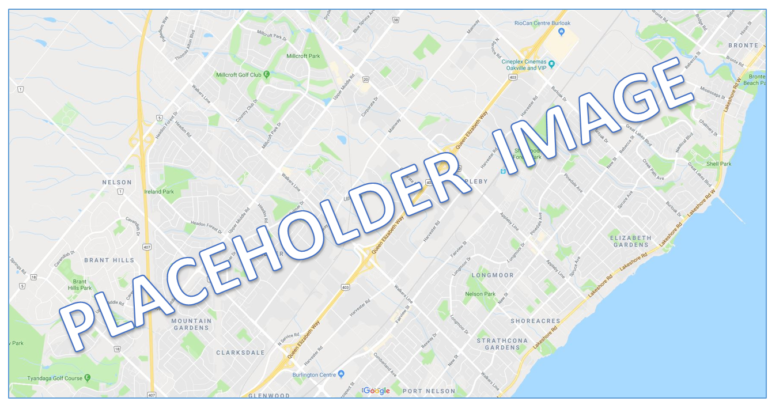
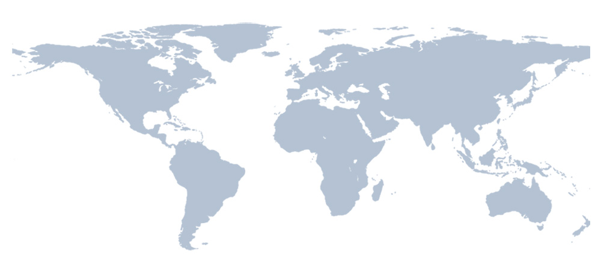

Who We Are
Fleming GIS Consulting is a new company that provides expertise in geographic analysis and outputs for businesses worldwide. We cater to the higher education market, including colleges, universities, and professional educational institutions.
What We Do
We are all black belts in karate which makes us very talented map creators. Our process is to literally kick a piece of paper until the shoe marks creates the pattern of a map. It is truly a sight to witness but we do not allow spectators at this time. Below are a few examples that we have kicked to life:
 More Information
Find us on social media! Please don't find us in real life, we are shy.